433 대부분은 운동이 부족해서가 아니라
434 몸을 잘못 쓰고 있다는 걸 모른 채
435 같은 동작만 반복했기 때문입니다.
436
439
440 김주영 코치는 무작정 운동을 시키기 전에,
441 몸을 어떻게 쓰고 있는지부터 확인합니다.
442
443
464 아픈데도 운동을 계속해 온 당신은,
465 이미 누구보다 충분히 노력해 왔습니다.
466
469 문제는 의지가 아니라,
470 단 한번도 제대로 된 방향을
잡아본 적이 없었다는 겁니다.
471
474 같은 허리 통증이라도
475 걷는 방식, 체중이 실리는 위치,
476 반복되는 습관은 사람마다 다릅니다.
477
480 그런데 많은 곳에서는 누구에게나
481 똑같은 스트레칭과 운동만 반복합니다.
482
485 잠깐 괜찮아졌다가도,
486 통증이 돌아오는 이유가 바로 이것입니다.
487
몸을 어떻게 쓰고 있는지부터 확인합니다.
502 503
504 어디서 힘을 잘못 쓰고 있는지,
505 어떤 동작이 반복적으로 부담을 주는지
506 '움직임' 자체를 기준으로 평가합니다.
507
510 아픈 부위만 보는 게 아니라,
511 '왜 아플 수밖에 없었는지'
원인부터 찾는 것.
512
515 이것이 김주영 코치가
516 운동보다 평가를 우선하는 이유입니다.
517
530 잘못된 움직임을 찾아내고,
531 원인부터 바로잡았을 때 나타난 변화들입니다.
532
535 이 변화들은 단순히
536 '운동을 열심히 한 결과'가 아닙니다.
537
540 움직임 평가를 통해
541 각자의 원인을 정확히 찾아낸 결과입니다.
542
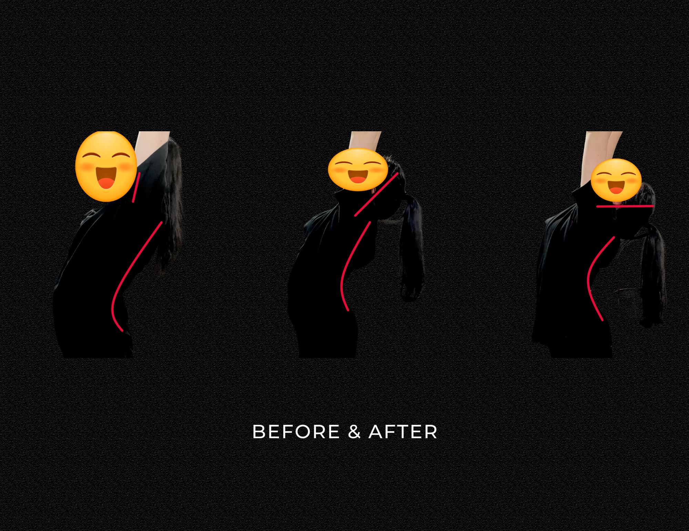
546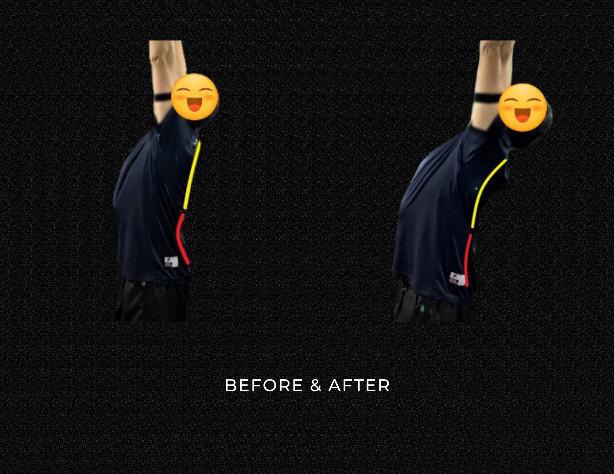
547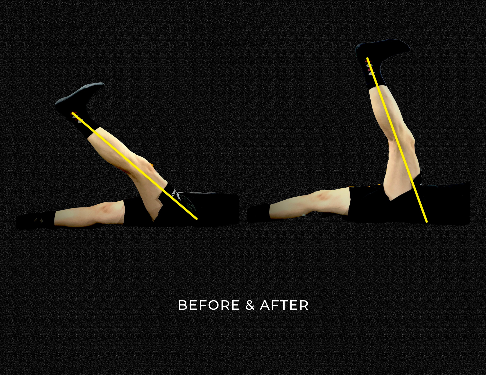
548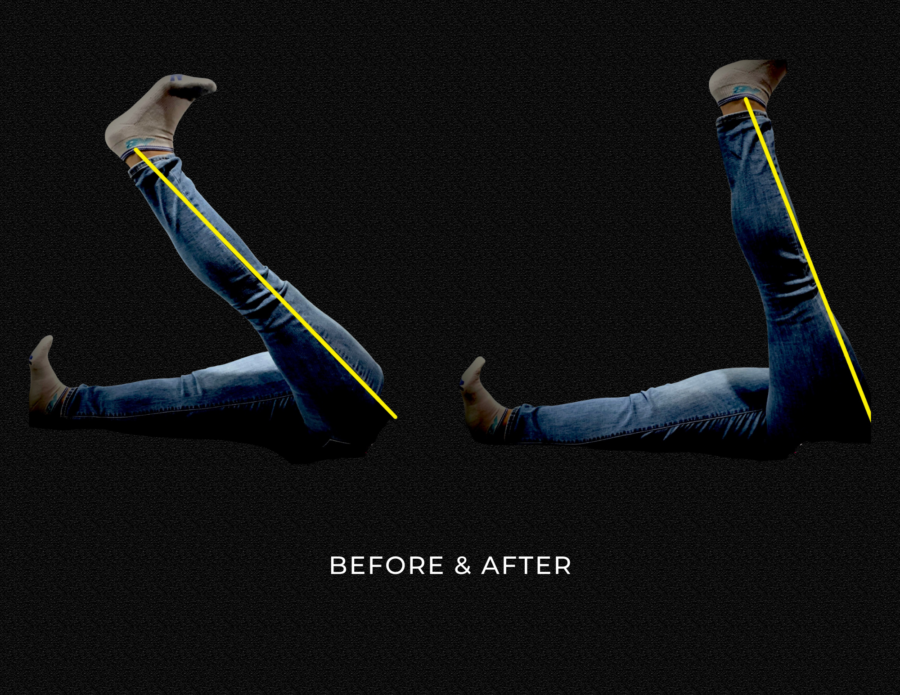
549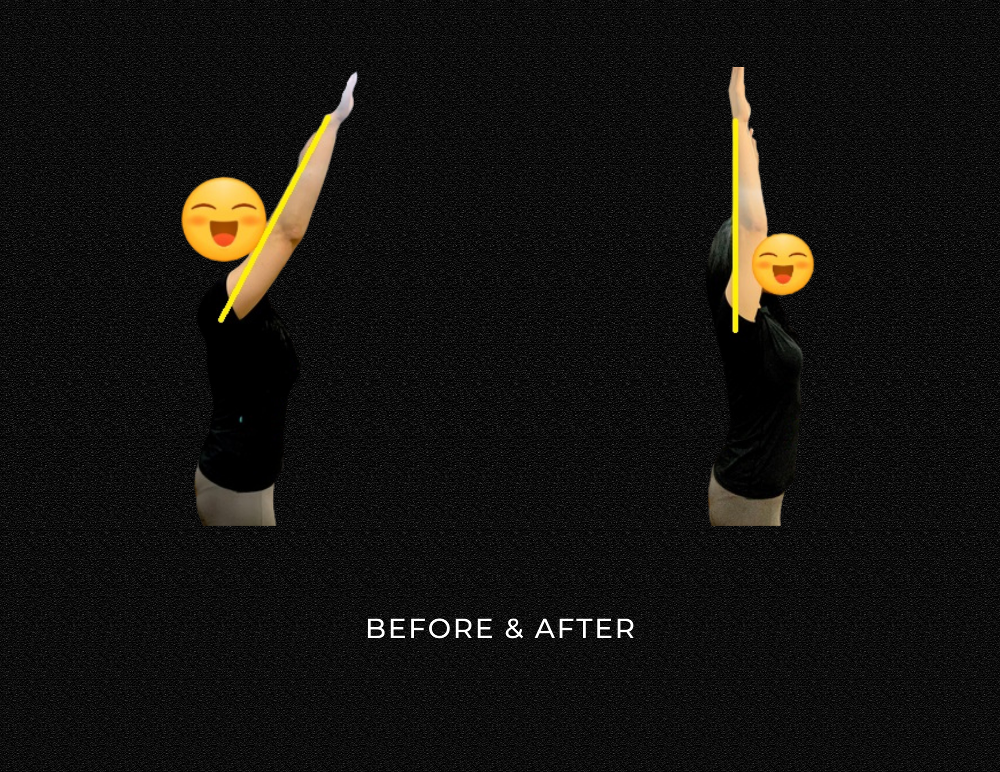
550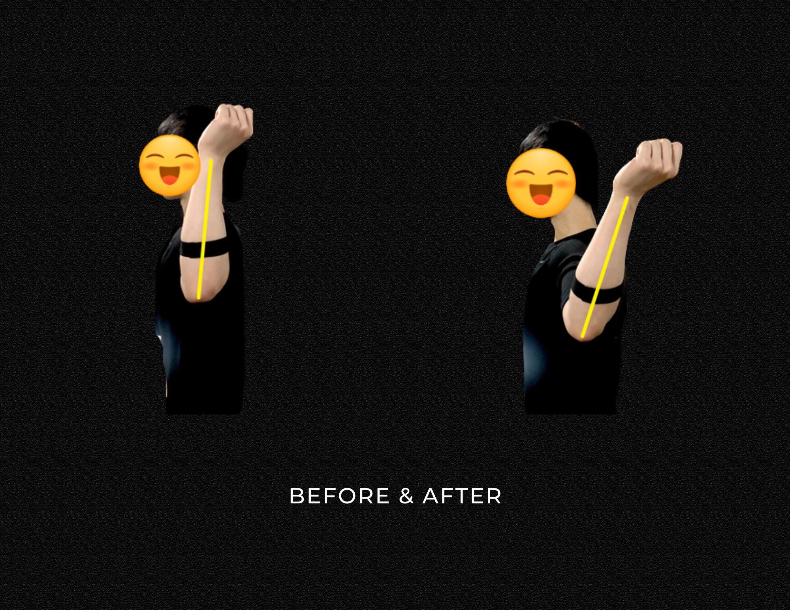
551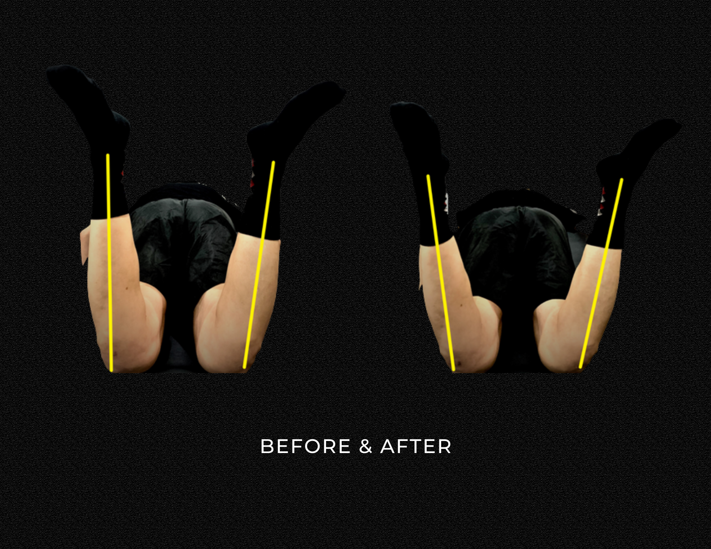
552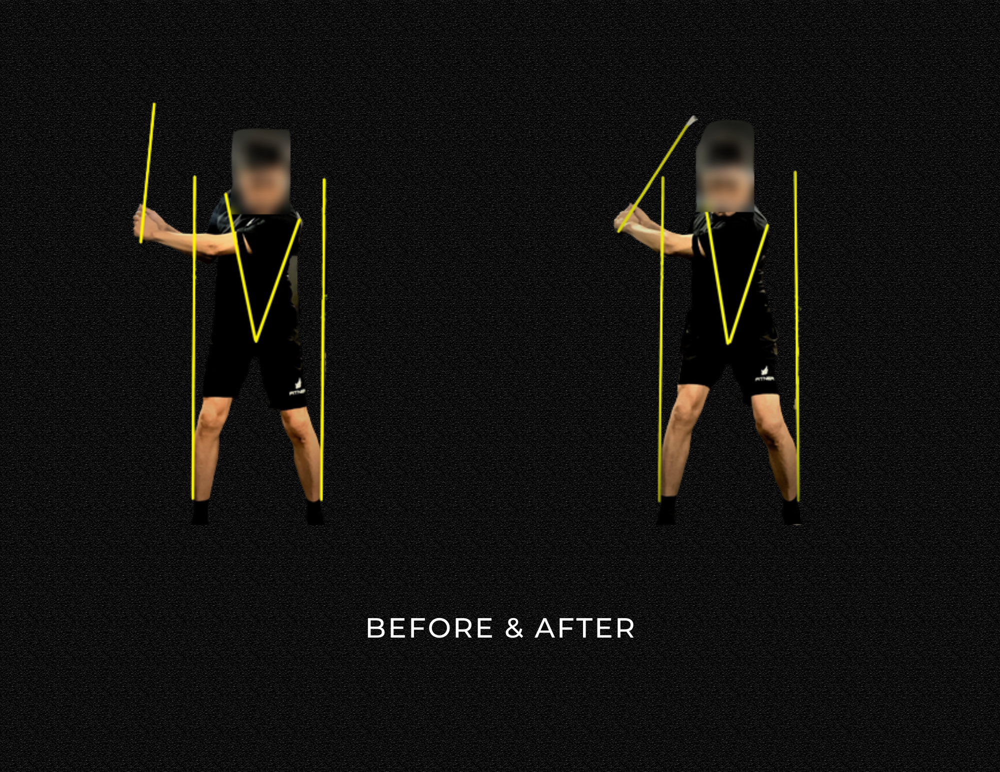
553
556 원인만 정확히 찾으면,
557 몸은 빠르게 바뀝니다.
558 그동안 방향이 틀렸을 뿐입니다.
559
572 운동을 열심히 해도 통증이 사라지지 않던 사람들.
573 움직임의 원인을 찾고 나서 달라졌습니다.
574
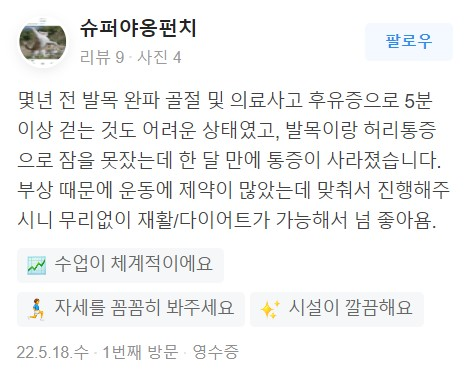
586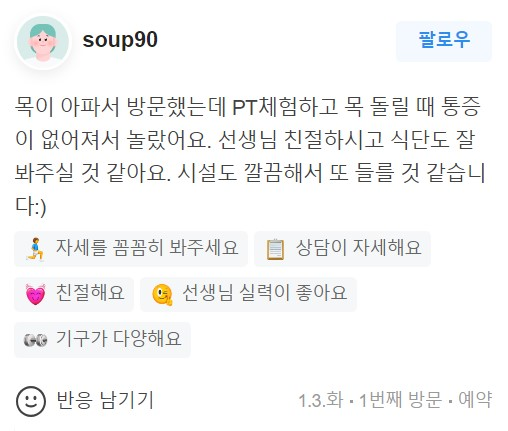
595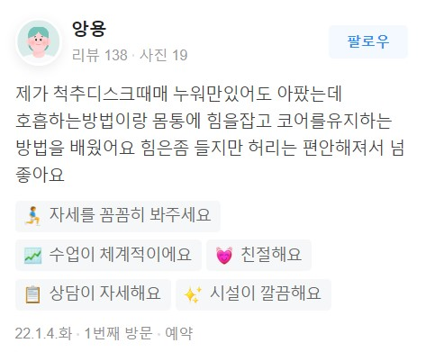
604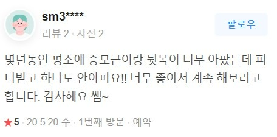
613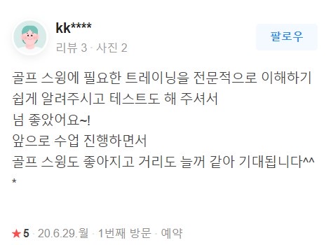
622
714 가장 저렴한 선택이 아니라,
715 가장 납득할 수 있는 선택이 필요할 때가 있습니다.
716
719 이제는 내 몸이 아픈 진짜 이유부터
확인해볼 차례입니다.
720